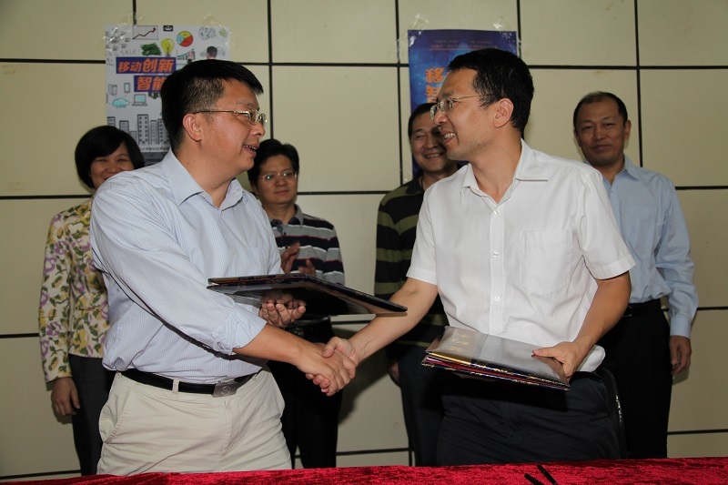

当前位置：
首页 >
学术研究 > 智能电网移动应用创新实验室”签约暨“科腾杯”中山大学移动应用创新设计大赛启动仪式成功举行
智能电网移动应用创新实验室”签约暨“科腾杯”中山大学移动应用创新设计大赛启动仪式成功举行
信息来源：移动信息工程学院
2013年10月28日，“智能电网移动应用创新实验室”签约暨“科腾杯”中山大学移动应用创新设计大赛启动仪式在珠海校区成功举行。校长助理、移动信息工程学院院长李文军教授、移动信息工程学院党委谢曼华书记、杨然副院长、芶祯成副院长，广州供电局有限公司信息中心邓凡副主任、广东合鸿达投资管理有限公司郭兴军副总经理、广州科腾信息技术有限公司黎炼总经理、朱晓东副总经理、甘川总经理助理，以及珠海校区党工委郝登峰书记、林俊洪副书记、党政办胡海峰主任和校区各职能部门的负责人应邀出席了仪式。

此次移动信息工程学院与广州科腾信息技术有限公司共建“智能电网移动应用创新实验室”，旨在通过合作机制创新、吸引和聚集国内外创新资源，充分提升双方在移动应用领域研究及应用的核心竞争力，实现“产学研用”相结合。仪式上，广州科腾信息技术有限公司的主管单位广州供电局有限公司和投资方广东合鸿达投资管理有限公司代表分别致辞，充分地肯定了移动信息工程学院与广州科腾信息技术有限公司的合作，并鼓励双方进一步深化合作、实现院企共赢。
共建“智能电网移动应用创新实验室”签约仪式后，还进行了“科腾杯”中山大学移动应用创新设计大赛启动仪式。广州科腾信息技术有限公司黎炼总经理宣布本次移动应用创新设计大赛启动，并对大赛做了简要介绍。“科腾杯”中山大学移动应用创新设计大赛是由广州科腾信息技术有限公司冠名赞助的一项学生科技创新性比赛，由移动信息工程学院主办。本届比赛是第一届，以“移动创新，智能无限”为口号，旨在提供展示舞台，让学生能够更好地将理论联系实际，将创意孵化成为科技作品，以赛促学。中山大学移动信息工程学院和软件学院各年级的学生均可以报名参赛。
仪式最后，广州科腾信息技术有限公司田纯青主管做了题为“移动信息技术在智能电网中的应用”的专题讲座，受到在场近150名学生的热烈欢迎。